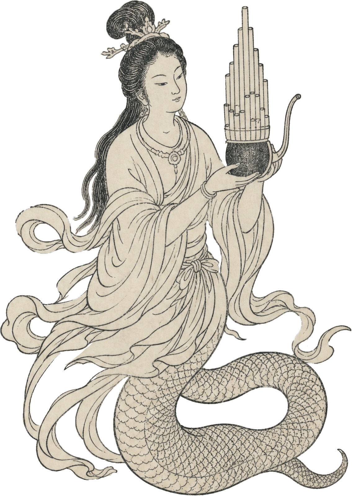

Observing Phenomena · Evolution
观象·演变

宋代
奚琴萌芽
二胡的历史可追溯至宋代，在《陈阳乐书》中记载的"奚琴"是二胡的祖先。当时用竹片夹在弦间拉奏，共鸣箱蒙皮为木板。
这是二胡最早的文献记载，反映了宋代拉弦乐器的初步形态。奚琴的名称源于北方奚族，是少数民族乐器传入中原的典型代表。

《陈阳乐书》中关于奚琴的记载
Observing Phenomena · Evolution
观象·演变

元代
马尾胡琴
随着畜牧业进入中原，弓毛改用马尾制作，蟒皮成为最理想的共振膜，元代后称为"马尾胡琴"。
这一时期，二胡的形制和演奏方式得到了进一步发展，音色更加圆润，表现力有所增强。元代戏曲艺术的兴起，为二胡的发展提供了广阔空间。

元代戏曲演出中的二胡伴奏场景
Observing Phenomena · Evolution
观象·演变
清代
戏曲伴奏
清代二胡开始普及，主要用于戏曲和说唱伴奏，尚未成为独立的独奏乐器。
当时的二胡音色较为朴素，演奏技法相对简单，主要服务于民间音乐表演。各地戏曲流派的兴起，如京剧、秦腔、昆曲等，都大量使用二胡进行伴奏，为二胡的传播和发展提供了重要契机。

清代戏曲舞台上的二胡伴奏